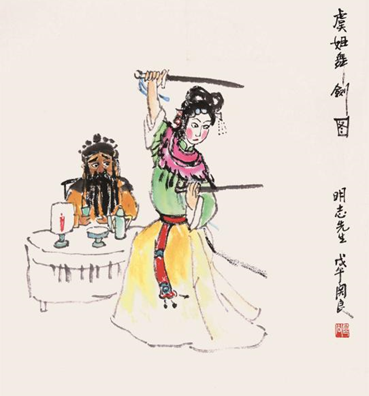

历史溯源
高抬戏剧目《霸王别姬》，取材于取材于中国古代历史故事——“霸王别姬”。这不仅仅是一段关于英雄末路、美人迟暮的哀歌，更是对忠诚、爱情与牺牲的深刻颂扬。
故事发生在楚汉争霸的硝烟弥漫之际，西楚霸王项羽，这位力拔山兮气盖世的英雄，面对着刘邦大军的层层围困，最终被困于垓下之地。生死存亡之际，虞姬为项羽献上了生命中最后一次的舞剑。
项羽与挚爱虞姬的告别，成为了历史上最为凄美的一幕。《霸王别姬》这一高抬戏剧目，将这段历史佳话生动地展现出来，让人身临其境，感受到了那份震撼人心的力量。它不仅是一部民间艺术作品，更是一幅动人的历史画卷，永远镌刻在人们的心中。
高抬戏剧目《霸王别姬》定格虞姬临终告别为项羽舞剑的画面。
演员及站位
高抬戏《霸王别姬》以其深沉的历史背景和动人的爱情故事，成为了中国传统文化中的经典之作。在这台戏中，项羽与虞姬两位角色，以其独特的性格特征和深刻的情感纠葛，吸引了无数观众的关注。
虞姬身姿曼妙，高居高抬桌上之上，她的站位象征着其高尚的情操与坚定的决心。虞姬的服饰华丽而不失庄重，每一针每一线都透露着匠人的心血与巧思。她的眼神中充满了对项羽的深情与不舍，但更多的是一种决然与坚韧。虞姬站在高处，仿佛是这座高抬桌上上的女王，她的每一个动作、每一个眼神都充满了力量，让人感受到她内心的坚定与决绝。她决定与相爱之人项羽同生共死，这份深情与勇气，让她在高抬桌上上熠熠生辉，成为了全场瞩目的焦点。
而在虞姬下方的项羽，则以一种截然不同的姿态展现着他的英雄气概与悲壮情怀。他身着战甲，手持长剑，站位低矮，却丝毫未减他的威严与霸气。项羽的站位设计，既体现了他此时大势已去的困境，又凸显了他作为一代霸王的坚韧与不屈。他的眼神中充满了坚定与决绝，仿佛即使面对再大的困难，也绝不轻言放弃。项羽的双脚分开站立，仿佛在向世人宣告，即使身处绝境，他也要与虞姬共赴黄泉，这份深情与悲壮，让人为之动容。
虞姬与项羽的站位设计，不仅巧妙地展现了两人之间的身份差异与情感纠葛，更通过高低错落的布局，营造出了一种强烈的视觉冲击力与情感张力。虞姬的高高在上，与项羽的低沉悲壮，形成了鲜明的对比与互补，使得整个高抬桌上场景充满了戏剧性与感染力。观众在欣赏这场高抬戏时，仿佛能够穿越时空，亲眼目睹那段悲壮的爱情故事，感受那份跨越生死的深情与决绝。
动作神态
高抬戏《霸王别姬》中，项羽与虞姬的动作神态细腻入微，将剧中人物复杂的情感与性格特征展现得淋漓尽致，令人为之动容。
项羽左手轻轻抚摸着下巴上的胡须，右手则紧握长剑，剑尖微微下垂，却散发着逼人的寒光。这一动作不仅体现了他的沉稳与深邃，仿佛一位历经沧桑的英雄，在默默思考着人生的意义与未来的命运；同时也透露出一种英雄末路的无奈与沧桑，让人感受到他内心的挣扎与痛苦。项羽的神态悲壮严肃，他的眉头紧锁，眼神中透露出不屈的光芒，仿佛在向世界宣告，即使身处绝境，他也绝不会轻易屈服。他的重心下沉，身体微微前倾，双脚分开站立，如同山岳般屹立不倒，随时准备迎接新的挑战，这份坚韧与勇气，让人为之肃然起敬。
而虞姬则以一种截然不同的姿态展现着她的勇敢与决绝。她手持双剑，身姿轻盈而矫健，剑尖在空中划出一道道优美的弧线，仿佛是在为这场悲壮的告别演出作最后的舞蹈。虞姬的眼神果敢决毅，没有丝毫的恐惧与犹豫，只有对项羽的深情与对命运的坦然接受。在她的脸上，洋溢着一种超越生死的宁静与从容，仿佛已经做好了随时舞剑赴死的准备。虞姬的每一个动作、每一个眼神，都充满了力量与美感，让人感受到她内心的坚定与决绝，也让人为之动容，为之叹息。
妆面服饰
项羽，身披坚实的靠甲，这靠甲不仅是一件防护装备，更是他英勇无畏、气势磅礴的象征。妆面以鲜明的色彩勾勒出复杂而细腻的纹路，展现出项羽的刚毅与霸气。头戴一顶气势恢宏的霸王盔，扎紧的黑色靠子紧贴身形，腰间斜挂的蟒袍随风轻扬，足蹬龙箭靴。
在表演中，项羽的动作讲究架子功，每一个招式都需要扎实的功底与精准的控制。而与之相对，虞姬作为项羽的爱妃，形象则是柔美与坚韧并存。她头戴一顶精致的虞姬冠（如意冠），形状如同盛开的莲花，既彰显了她温婉动人的气质，又寓意着她高洁不染的品格，完美衬托出虞姬的柔美身姿与内在的坚韧。
 <. /img>